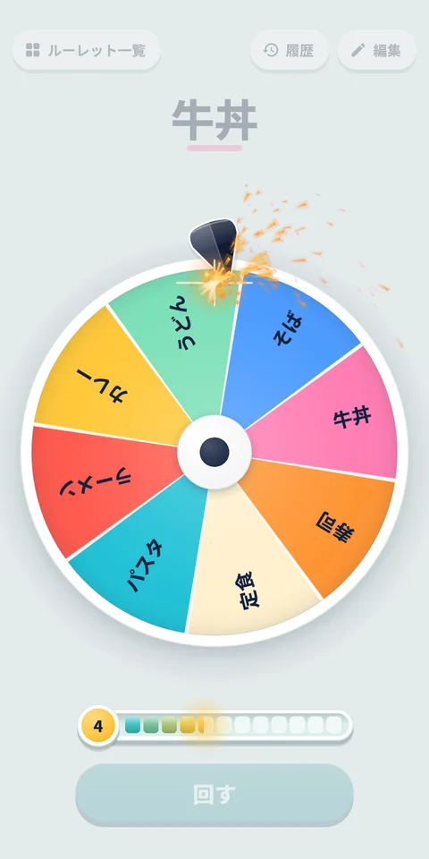
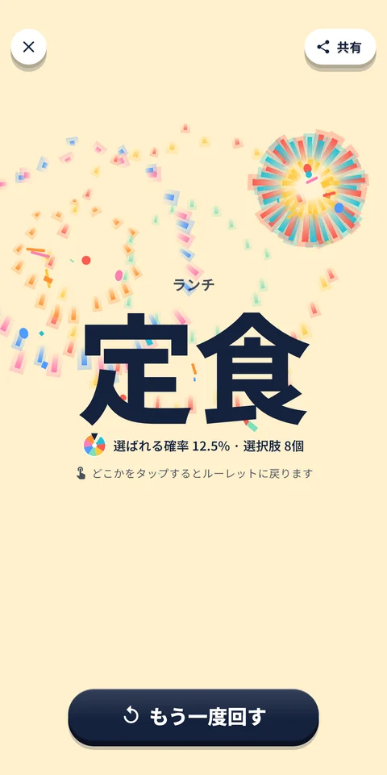
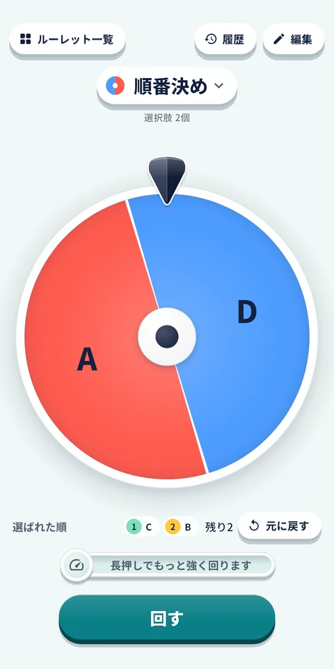

スクリーンショット







アプリについて
| アプリ名 | RotaPick |
|---|---|
| バージョン | 1.0.0 |
| 開発 | Willee Project |
| 対応プラットフォーム | Android |
選択肢を書くと、色分けされたマスに分かれたルーレットができます。回すと、ポインターの下で止まったマスが選ばれます。ランチ、順番決め、はい/いいえ、くじ引きなど、1つ選びたいときに使います。
- 会員登録もログインもありません。作ったルーレットと履歴は端末の中に保存されます。
- インターネットがなくても使えます。 インターネットは画面下の広告と、利用統計・エラー報告の送信にだけ使います。
- 言語は端末の設定に従います。日本語・英語・韓国語・中国語（簡体字・繁体字）に対応し、設定で直接選ぶこともできます。
- 結果はあらかじめ決まっていません。マスの広さがそのまま選ばれる確率です（8章）。
1. はじめに
- 初めて開くと、ランチのルーレットがすぐに開きます。名前の下に「名前をタップすると他のルーレット・新規作成」という案内が一度だけ出ます。
- 次からは、最後に開いたルーレットがすぐに開きます。
- 名前のプレートか、上のバーのルーレット一覧をタップすると一覧に移ります。新しいルーレットはそこで作ります（4章）。
2. ルーレット画面
中央にルーレットがあり、上にはルーレットの名前のプレートとボタン3つ（ルーレット一覧・履歴・編集）、下には強さバーと回すボタンがあります。
回し方
- ポンと押す: 回すを短く押すと、普通の強さで回ります。
- 長押し: 押し続けると強さバーがたまります（約1.2秒で満タン）。離した瞬間の強さで回ります。強いほど出だしが速く、長く回ります。
- はじく: ルーレットを指ではじいても回ります。速くはじくほど強く回ります。
- バーの数字は強さ（0〜10）です。押している間はためた強さ、はじいている間は指の速さ、回っている間はルーレットの速さを表します。
- 強さを調整しても、マスを狙うことはできません。最後の1周の中は均等に選ばれます。
- 回る時間は設定の回転時間（短め約3秒・普通約5秒・長め約8秒）に従い、強さによって少し長くなったり短くなったりします（7章）。
- ポインターがマスの境目を越えるたびに、ティック音と振動が出ます。回っている間は、名前の場所にポインターの下のマスの名前が表示されます。
「選ばれたマスを外す」がオンのとき
ルーレットの下（強さバーの上）に選ばれた順の帯が出て、選ばれたマスと残りの数を表示します。結果を閉じると、選ばれたマスがルーレットから縮んで消えます。元に戻すを押すと、すべて戻ります。全部選ばれると「すべて選ばれました。」と元に戻すが出ます。文字の入った選択肢が1つだけのときは、「選択肢を2つ以上書いてください。」と編集ボタンが出ます。
3. 結果
- ルーレットが止まると、選ばれたマスが外に飛び出し、マスの色が画面に広がって、結果の文字が大きく表示されます。そのマスの選ばれる確率も一緒に表示されます。
- 共有: 結果とストアのリンクを入れたメッセージを、ほかのアプリに送ります。
- もう一度回す: すぐにもう一度回します。このボタンも長押しすると強さがたまります。
- 左上の×か、画面のどこかをタップするとルーレットに戻ります（広告のすぐ上の細い帯は反応しません）。
- 結果は選ばれた瞬間に履歴に残ります。
4. ルーレット一覧
- ルーレットは大きな丸いカードで、1行に2つ表示されます。カードには名前、選択肢の数、最後に使った時（たった今・時刻・昨日・日付）が出ます。「選ばれたマスを外す」をオンにしたルーレットには残り/全体も出ます。
- 最近使ったルーレットが先頭に来ます。いま使ったものには、ティール色の縁と左上の時計マークが付きます。
- カードをタップするとそのルーレットを開きます。
- カードのメニュー: 名前を変更、複製（元のルーレットのすぐ次の位置（2列のため横になることもあります）に「{名前} のコピー」ができ、外れたマスは戻り、履歴は空になります）、削除（一度確認します）。
- カードを長押ししてドラッグすると、順番を変えられます。
- ルーレットを作るカードで、空から始めるか、4つのテンプレートから選びます。作ったルーレットは一覧の先頭に来ます。空から作ると、すぐに編集が開き、テンプレートを選ぶと、そのルーレットの画面がすぐに開きます。
| テンプレート | 選択肢 |
|---|---|
| はい/いいえ | はい、いいえ |
| 数字 1〜6 | 1から6まで |
| ランチ | ラーメン、カレー、うどん、そば、牛丼、寿司、定食、パスタ |
| 順番決め | A、B、C、D（「選ばれたマスを外す」がオンで始まります） |
設定（7章）は、一覧画面の上にある設定ボタンで開きます。
5. 編集
ルーレット画面の編集ボタンで開きます。入力するたびに自動で保存され、保存ボタンはありません。
上には、プレビューのルーレット、ルーレットの名前、「回るマス n · 外れたマス m」、選ばれたマスを外すスイッチがあります。その下が選択肢の行です。
- 選択肢 n / 100: 1つのルーレットには選択肢が2〜100個あります。追加で行を足せます。最後の行でキーボードの「次へ」を押しても新しい行ができます。
- 行ごとに、色の点、文字、×n（比率）、選ばれる確率（%）が表示されます。確率は今のルーレットで選ばれる確率です。
- 行をタップすると開きます。比率を×1〜×10に変えたり（比率の分だけマスが広くなります）、削除したりできます。削除すると「選択肢を削除しました」と取り消すがしばらく表示されます。
- 色: 色の点をタップすると、8色と自動が出ます。自動は隣のマスと違う色になり、行を動かしたり削除したりしても、色はマスについていきます。
- 並べ替え: 行のハンドルをつかんでドラッグするか、開いた行の順番ボタン（一番上へ・上へ・下へ・一番下へ）を押します。
- 選ばれたマスを外すをオンにすると、選ばれたマスは元に戻すを押すまでルーレットから外れます。外れたマスは薄く表示され、「選ばれた」と出ます。
6. 履歴
ルーレット画面の履歴ボタンで開きます。ルーレットごとに直近50件を残します。
- よく選ばれたマス: 選ばれた回数のバーと、マスの広さ（%）を並べて見られます。回数は実際に出た結果、%はそのマスが出るはずの割合です。
- その下に、今日・昨日・日付ごとにまとめた結果が新しい順に並びます。
- 履歴を消すを押すと、一度確認してから、そのルーレットの履歴を消します。
7. 設定
ルーレット一覧の設定ボタンで開きます。グループは2つです。
サウンドと効果
| 項目 | 働き |
|---|---|
| 効果音 | ティック・停止・結果・花火の音をオン/オフします |
| バイブレーション | 回っているときと止まるときの振動をオン/オフします |
| エフェクトを減らす | 火花・花火・色の広がりなどの演出を控えめにします |
| 回転時間 | 短め(約3秒)、普通(約5秒)、長め(約8秒)から選びます |
一般
| 項目 | 働き |
|---|---|
| 言語 | 端末の言語（初期設定）に従うか、一覧から選びます（English · 日本語 · 한국어 · 简体中文 · 繁體中文） |
| プライバシー設定 | 広告の同意画面を開き直します。同意が必要な地域（ヨーロッパなど）でのみ表示されます |
| このアプリについて | バージョン、この説明（使い方）、Google Playで評価する、プライバシーポリシー、オープンソースライセンス、ほかのアプリ（タップするとGoogle Playが開きます）、すべてのアプリを見る |
画面の色は端末のダークモード設定に従います。アプリの中にスイッチはありません。
8. 公平さ
- マスの広さがそのまま確率です。 隠れた比率はありません。×2のマスは×1のマスの2倍の広さで、選ばれる確率も2倍です。
- 結果はあらかじめ決まっていません。回すたびに、最初の速さと減速の仕方をランダムに決め、止まった角度がマスを決めます。
- 強さと回転時間は演出であり、マスを選ぶのには使えません。
9. 広告とデータ
- 画面の一番下にバナー広告が1つあります。これが唯一の広告で、ルーレット画面の回すボタンとルーレットは広告から十分に離れています。キーボードが出ている間、広告の帯は隠れます。
- 同意が必要な地域（ヨーロッパなど）では、初めて開いたときに広告の同意画面が出ます。あとから設定のプライバシー設定で変更できます。
- アプリ内課金はありません。
- ルーレット・選択肢・色・比率・履歴・設定は端末にだけ保存され、サーバーには送られません。Googleバックアップ（Android自動バックアップ）がオンなら、一緒にバックアップされます。アプリを削除すると、端末のデータも消えます。
- くわしくはプライバシーポリシーをご覧ください。